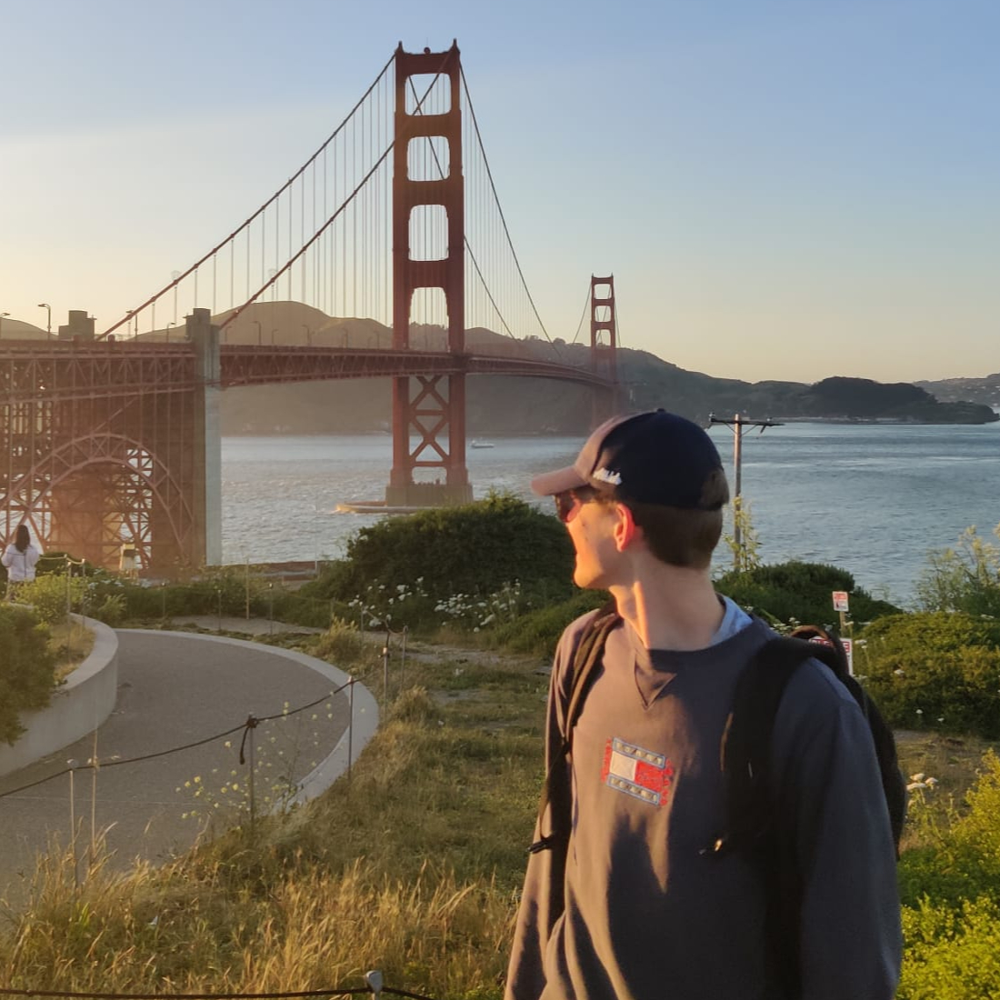
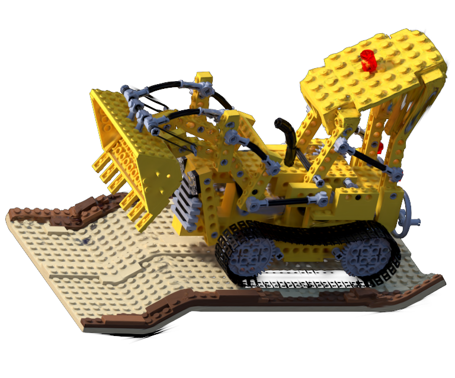
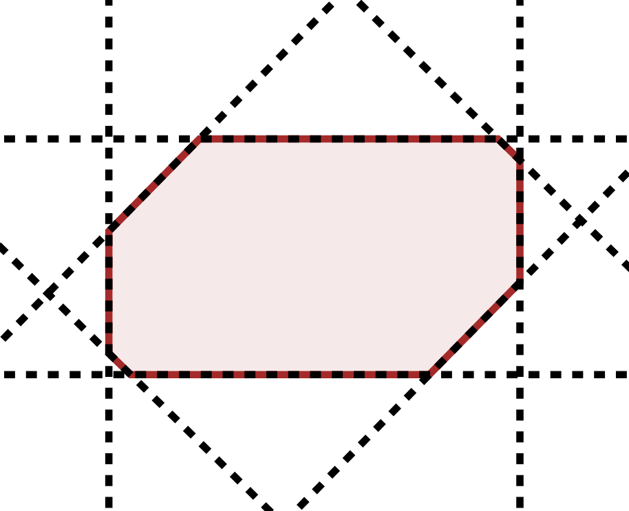
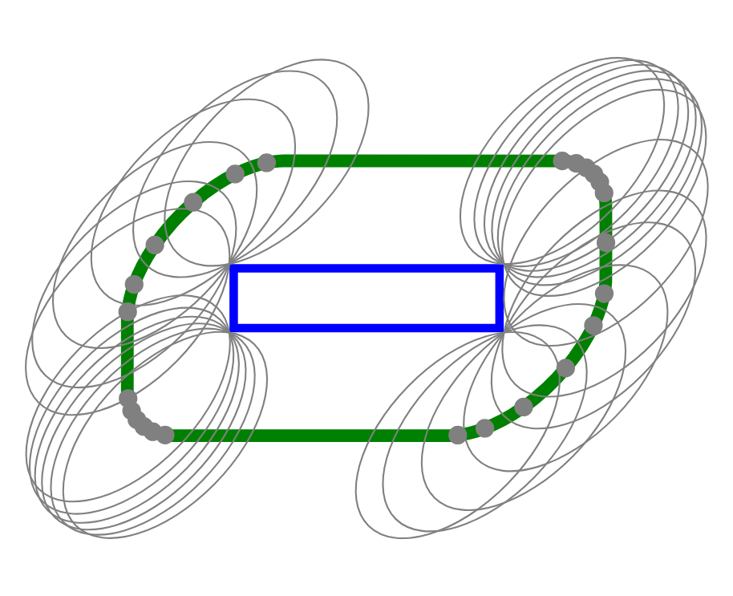

|
Bert Ramlot I'm a PhD student at IDLab-MEDIA, a research group affiliated with Ghent University and imec, based in Ghent, Belgium. I currently work predominately on 3D Gaussian Splatting (3DGS). |
 |
Research |
|
 |
Mesh-Driven 3D Gaussian Splat Manipulation
I3D poster (ACM SIGGRAPH Symposium on Interactive 3D Graphics and Games), 2026 2 page paper / blog / (More links comming soon!) A real-time pipeline that enables traditional mesh-driven manipulation of pre-trained 3D Gaussian Splats (without training). |
|
|
POTR: Post-Training 3DGS Compression
TCSVT (IEEE Transactions on Circuits and Systems for Video Technology), 2026 project page / paper ( arXiv ) / code / blog Post-training compression method for 3DGS with both a novel pruning technique (2-4x fewer splats) and a novel spherical harmonics energy compaction method (10x fewer coefficients). |
|
  |
Lightweight Implicit Approximation of the Minkowski Sum of an N-Dimensional Ellipsoid and Hyperrectangle
Mathematics, 2025 (Feature Paper) doi / blog Simple, fast, non-iterative approximation of the Minkowski sum of an N-dimensional ellipsoid and hyperrectangle. |

|
Dimensionality Reduction for the Real-Time Light-Field View Synthesis of Kernel-Based Models
Electronics, 2024 (Editor's Choice) doi / blog GPU-accelerated method for real-time rendering of interactive 4D light fields using Steered Mixture of Experts (SMoE) representations. |
Internships |
|
PhD Intern (Immersive Media Coding) — Nokia
Antwerp, Summer 2025 Researched and developed compression techniques for 3DGS resulting in 1 conference paper (comming soon), 3 provisional patents, and 2 MPEG contributions. |
|
Template from John Barron. |